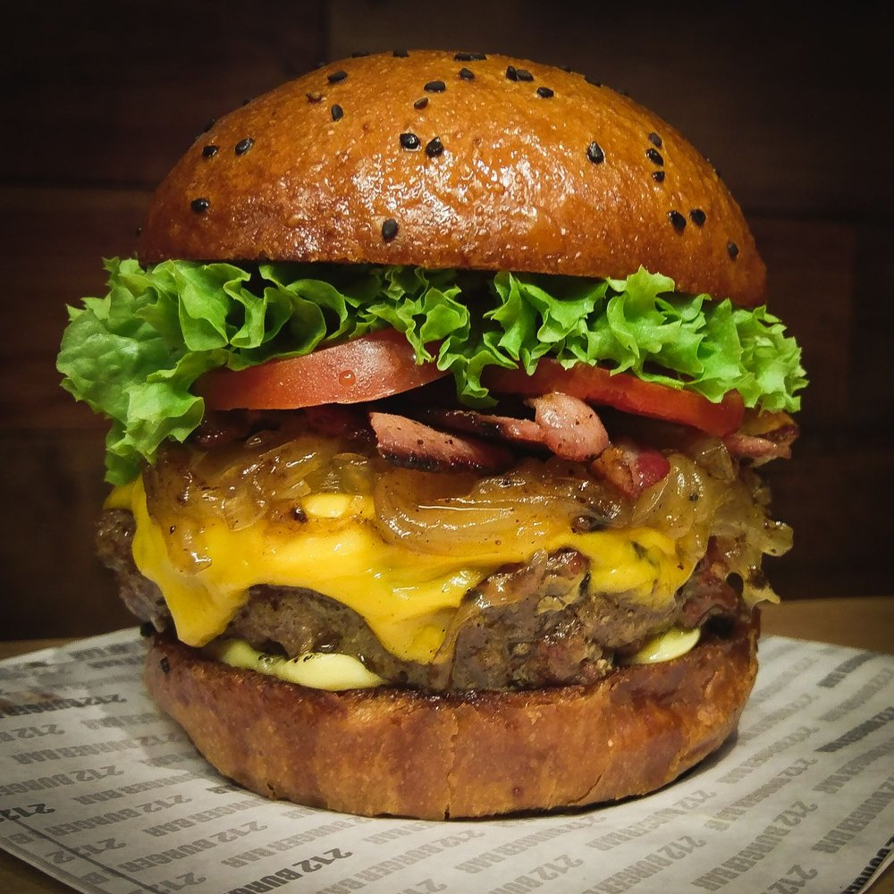

Hamburguers

Description
A classic hamburger is made with a seasoned ground beef patty grilled until juicy and served on a toasted bun with fresh toppings. It is one of the most popular comfort foods around the world.
The burger can be customized with cheese, lettuce, tomatoes, onions, pickles, and your favorite sauces, making it perfect for any occasion.
Ingredients
- 1 pound ground beef
- Salt
- Black pepper
- Hamburguer buns
- Cheddar cheese slices
- Lettuce
- Tomato slices
- Onion slices
- Pickles
- Ketchup
- Mustard
- Mayonnaise
Steps
- Divide the ground beef into equal portions.
- Form each portion into a patty.
- Season both sides with salt and pepper.
- Heat a grill or skillet over medium-high heat.
- Cook the patties until they reach your desired doneness.
- Add cheese during the last minute of cooking.
- Toast the hamburger buns.
- Place the patty on the bottom bun.
- Add the toppings and sauces.
- Cover with the top bun and serve immediately.
Home